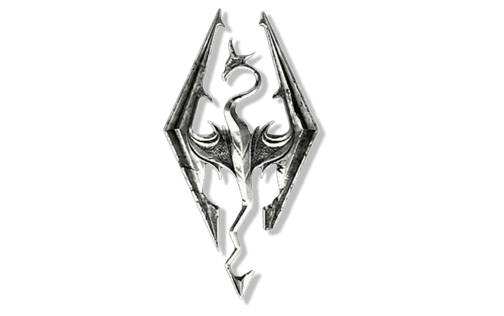
Seja Bem˗vindo a Skyrim!
“Você estava tentando cruzar a fronteira, certo? Caiu direto na emboscada
imperial, igual a nós e aquele ladrão ali.”
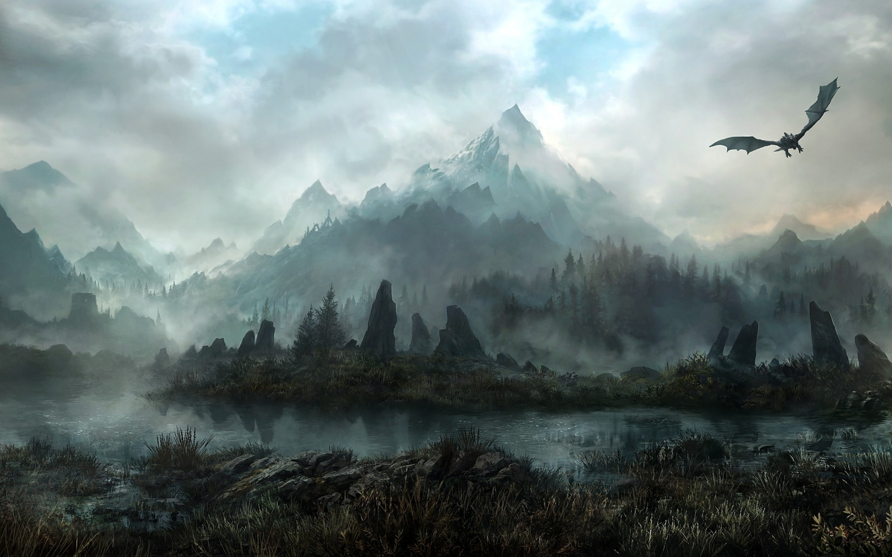
O Mundo de Tamriel
Tamriel é o coração do mundo — um continente vasto, cheio de povos, reinos e mistérios antigos.
De onde estou, posso quase sentir os ventos que sopram das ilhas dos Altmer, no longínquo oeste,
até os pântanos sufocantes de Black Marsh, lá no leste. Cada província tem seus próprios deuses,
costumes e conflitos… e, acredite, todos acham que são os verdadeiros herdeiros dessa terra.
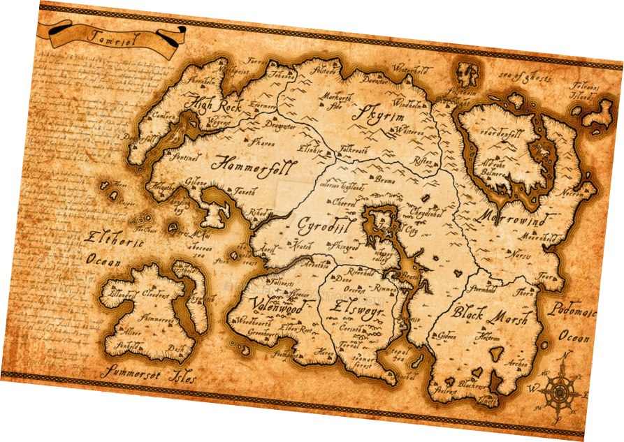
| Mapa de Tamriel
• Skyrim – terra dos nórdicos, fria e montanhosa.
• Cyrodiil – coração do Império e cenário de TES IV: Oblivion.
• Morrowind – lar dos elfos escuros (dunmer).
• High Rock – berço dos bretões.
• Hammerfell – terra desértica dos redguards.
• Elsweyr – terra dos khajiit, com desertos e selvas.
• Valenwood – lar dos bosmers, os elfos da floresta.
• Black Marsh (Argonia) – pântano natal dos argonianos.
• Summerset Isles (Alinor) – pátria dos altmers, os elfos superiores.
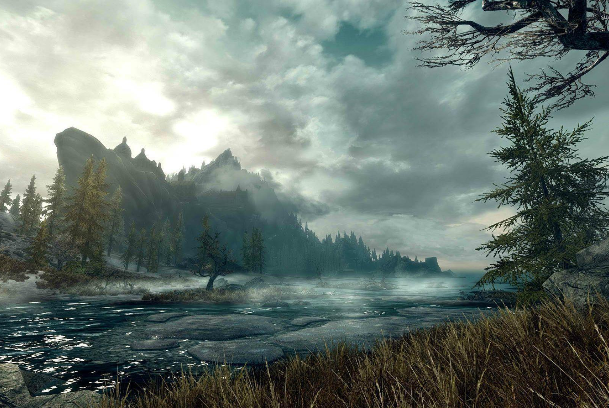
Skyrim
A terra dos ventos cortantes, das montanhas que tocam os céus e dos homens de coração feroz.
Fica aqui,
no extremo norte de Tamriel — onde a neve nunca derrete e o rugido de um dragão pode ecoar por vales inteiros.
Os que vivem aqui se chamam nórdicos — guerreiros nascidos no frio, tão resistentes quanto o gelo das
montanhas. Vivem e morrem com a espada na mão, acreditando que a coragem leva suas almas para Sovngarde, o
salão dos heróis.
|Mapa de Skyrim
Mas Skyrim não está em paz.
Os Imperiais tentam manter a província sob o controle do Império,
enquanto os Stormcloaks, liderados por Ulfric de Ventalia,
lutam por liberdade e tradição.
O sangue
nórdico ferve — e o chão se mancha de vermelho
nas duas margens dessa guerra.
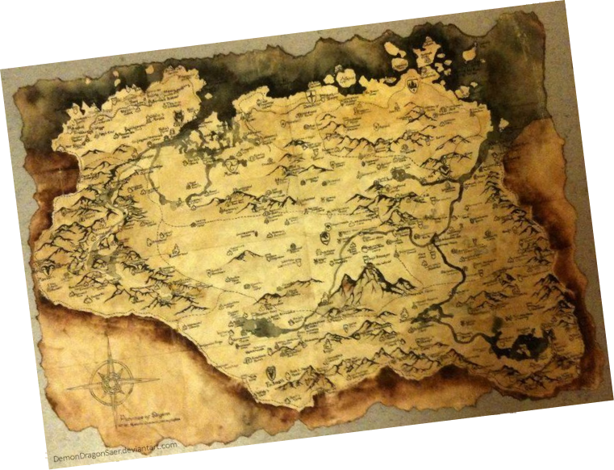
As Principais Cidades de Skyrim
Skyrim é uma terra vasta e antiga, dividida entre montanhas geladas, vales férteis e ruínas dos tempos dos dragões. Cada uma de suas grandes cidades reflete um aspecto do povo nórdico — sua força, fé, orgulho e também suas divisões.
A Guerra Civil
 Legião Imperial
Legião Imperial
VS
Stormcloaks
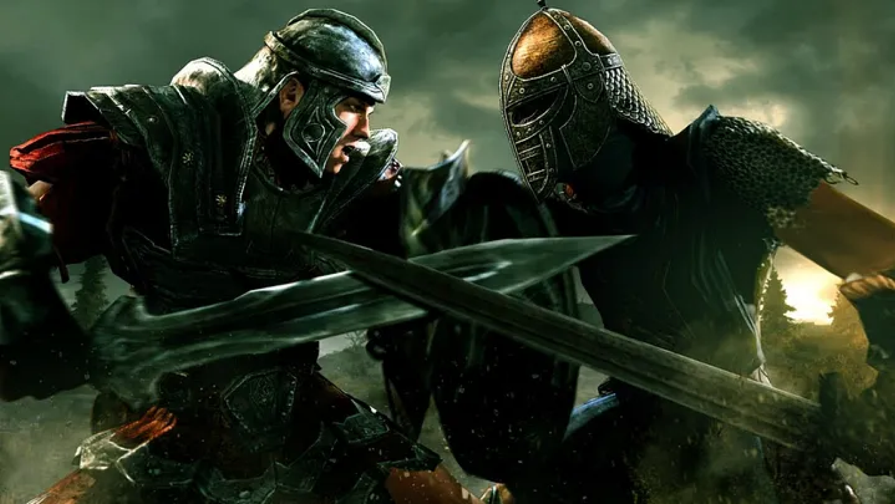
General Tulius
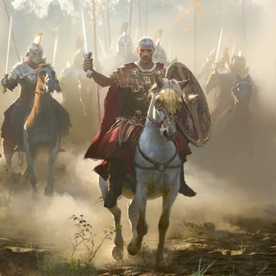
Líder da legião e dos Soldados Imperiais
O General Tullius é o comandante da Legião Imperial em Skyrim,
enviado de Cyrodiil para
reprimir a rebelião dos Stormcloaks, liderada
por Ulfric Coração-de-Ferro. Como estrangeiro, é visto com
desconfiança e desprezo pelos nórdicos, que o consideram um invasor
incapaz de compreender sua cultura
e tradições. Ainda assim, Tullius
mantém seu quartel-general em Solitude, no Castelo Dourado, de onde
coordena a campanha imperial com o apoio de Legate Rikke e
Jarl Elisif, a Justa.
Ulfric Stormcloaks
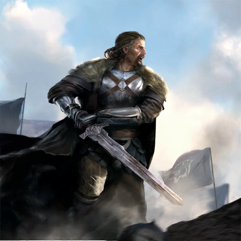
Jarl de Windhelm e Líder dos Stormcloaks
Ulfric Coração-de-Ferro, Jarl de Ventalia (Windhelm), é o líder dos
Stormcloaks, rebeldes
que lutam pela
independência de Skyrim.
Nascido em família nobre, treinou com os Barbas Cinzentas e
aprendeu o poder
do Thu’um, mas deixou o mosteiro para lutar na
Grande Guerra. Capturado e torturado pelos elfos do
Domínio
Aldmeri, retornou a Skyrim desiludido com o Império, especialmente
após o Tratado de
Concórdia Dourada, que proibiu o culto a Talos.
Convencido de que o Império traiu os deuses e o orgulho nórdico,
Ulfric iniciou uma rebelião, cujo ponto
decisivo foi o duelo em que
matou o Alto Rei Torygg, visto por uns como ato heroico e por outros
como
assassinato. Carismático e inspirador, ele prega liberdade e
soberania, mas é também orgulhoso e
impetuoso,
muitas vezes guiado
mais pela fé e pelo ego do que pela prudência.
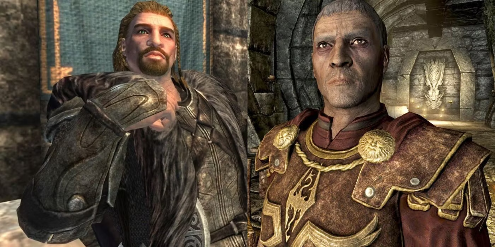
A guerra que divide Skyrim não é apenas de espadas — é de corações. De um lado, Ulfric Stormcloak,
o herói de Windhelm,
clama por liberdade e honra aos antigos deuses, acreditando que o Império traiu nosso
povo ao proibir o culto a Talos.
Do outro, General Tullius, estrangeiro de coração frio, comanda as legiões
imperiais para manter a ordem e impedir
que Skyrim se parta em pedaços. Nas tavernas, nas montanhas e nas
aldeias, o povo discute quem tem razão.
Uns veem Ulfric como libertador, outros o chamam de traidor. E
enquanto a neve cobre os campos ensanguentados,
o futuro de Skyrim pende entre o orgulho nórdico e o peso do
Império.
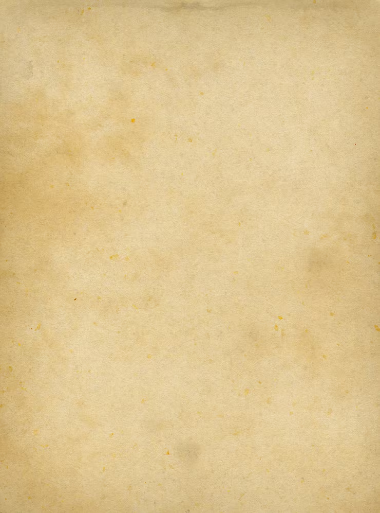
Dragonborn
O Dragonborn é mais que carne e osso — é o suspiro dos deuses
entre o trovão e o fogo, o eco de eras enterradas sob gelo e sangue.
Quando ele ergue a voz, o próprio
firmamento se parte, e os dragões, filhos do céu, se curvam em temor ancestral.
Sua presença carrega o
peso de profecias não escritas, e o ar ao redor vibra como se o mundo hesitasse entre venerar ou temer.
Ele caminha entre ruínas que o tempo esqueceu, e em seus olhos arde a lembrança do início dos tempos.
O
destino o chama por muitos nomes — libertador, destruidor, avatar do próprio destino —
mas nenhum o
contém. Pois o Dragonborn não segue o curso do mundo;
ele o molda, e seu grito é o som da eternidade
lembrando que
o poder ainda dorme sob a pele dos mortais.
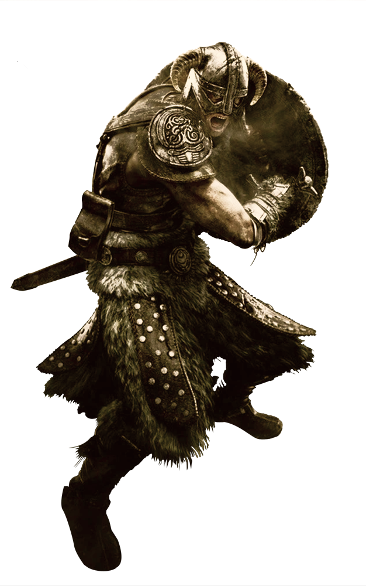
Dizem que ele é o eco de um poder esquecido, um mortal com a alma de dragão. O Dovahkiin.
Ninguém o
esperava — nem os estudiosos da Academia de Winterhold, nem os guerreiros de
Sovngarde. Ele surgiu no
momento em que o mundo mais precisava, quando Alduin,
o Devorador de Mundos, retornou dos tempos antigos
para consumir a terra dos homens.
Uns dizem que o Dragonborn é uma lenda dos tempos de Ysgramor,
um dom dos deuses para restaurar o
equilíbrio quando o caos desperta.
Outros o veem como uma arma — usada pelos impérios e pelos rebeldes
igualmente,
cada um tentando moldar o destino do sangue de dragão conforme sua própria vontade.
Mas aqueles que o viram em batalha contam histórias diferentes.
Dizem que quando ele fala, o próprio ar se
curva. Que um único Thu’um pode
despedaçar muralhas e fazer dragões caírem do céu. E ainda assim, por trás
desse poder divino,
há apenas um viajante solitário... cruzando montanhas cobertas de neve, enfrentando
Daedras,
bandidos e bestas antigas, carregando o peso de um destino que nem ele próprio pediu.
Guildas
Dark Brotherhood
A Dark Brotherhood é uma organização de assassinos altamente treinados que atuam em contratos
de
assassinato por toda a região de Tamriel. Eles operam através de santuários clandestinos e
têm uma
hierarquia de líderes e assassinos que seguem um código rigoroso.
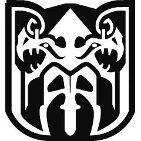
Companions
Se procuras guerreiros de verdade, homens e mulheres que vivem pelo código de Ysgramor, o teu destino é
Jorrvaskr,
o grande salão de hidromel em Whiterun, a cidade branca. Eles não são uma "guilda" comum, como a dos Magos
ou
a dos Ladrões. Eles são um bando de honra, uma família de guerreiros que remonta à idade mítica. Seu
juramento é
proteger Skyrim e seus cidadãos de ameaças que o Jarl ou os guardas não conseguem conter.
Eles realizam contratos,
caçam monstros, limpam ruínas... os trabalhos que exigem aço e coragem, e
não feitiçaria furtiva.
Thieves Guild Shadowmarks
A Guilda dos Ladrões é uma organização de criminosos profissionais sediada em Riften que oferece apoio mútuo
para
os empreendimentos ilegais de seus membros e clientes.
A base de operações da guilda é a Ragged Flagon
(O Frasco de Trapos), uma taverna escondida na extensa
rede
de esgotos e túneis conhecida como "A Ratway"
(A Passagem dos Ratos), localizada sob a cidade de
Riften, a
cidade mais corrupta e controlada
por sindicatos de crime de Skyrim.
As marcas de sombra (Shadowmarks) são símbolos usados pela Guilda dos Ladrões de Skyrim para se
comunicarem,
marcando edifícios e locais com informações sobre seu potencial de uso, como se um local é seguro ou uma boa
oportunidade para roubar. Elas são esculpidas em locais como portas e passagens para que os membros da
guilda
possam se orientar rapidamente e evitar perigos.
College of Winterhold
A Guilda de Magos se extinguiu ao longo dos anos e o Colégio de Winterhold é seu equivalente em Skyrim,
o Colégio é mal visto pela maioria dos Nórdicos e pelo próprio Jarl Korir de Winterhold, que os acusa de
terem destruído a cidade. É o único lugar em Skyrim dedicado à educação e prática de artes arcanas, com
professores de todas as disciplinas mágicas, um centro de treinamento e treinamento em itens mágicos.
O colégio está localizado nos penhascos ao norte da cidade de Winterhold e pode ser ingressado pelo
jogador.
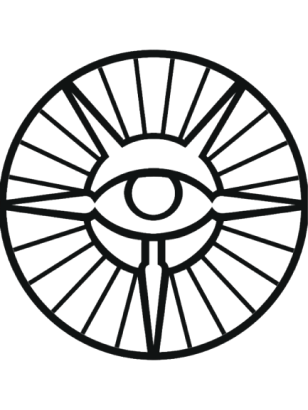